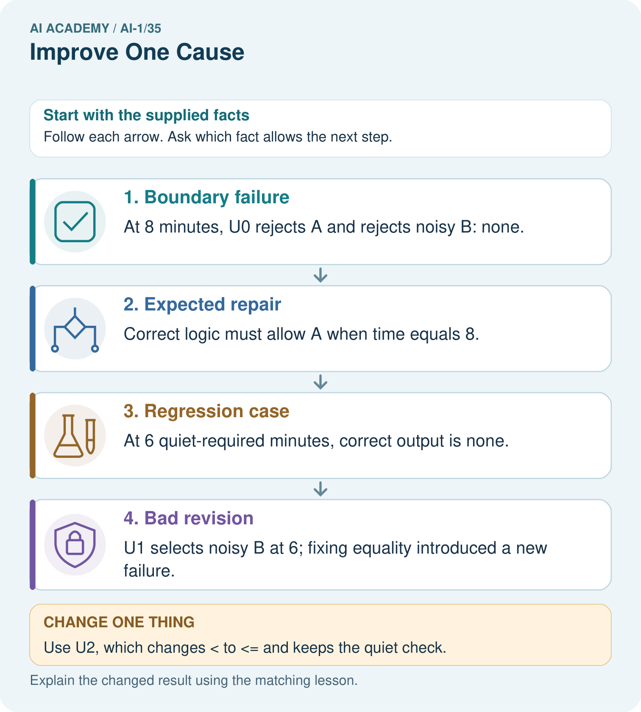
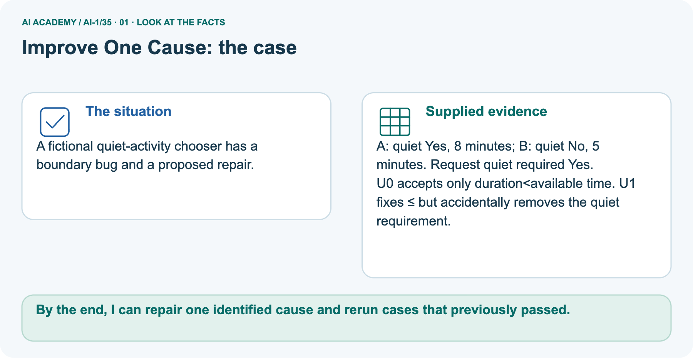
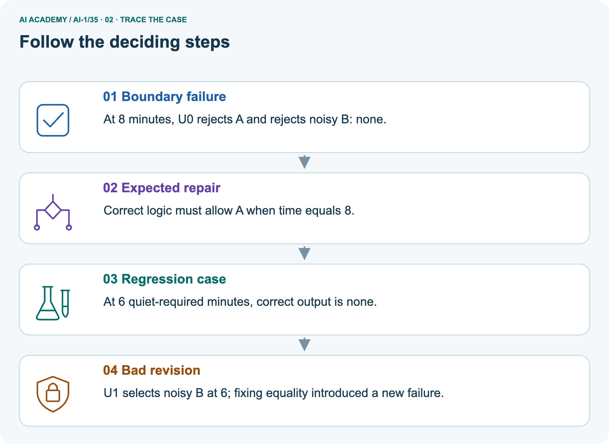
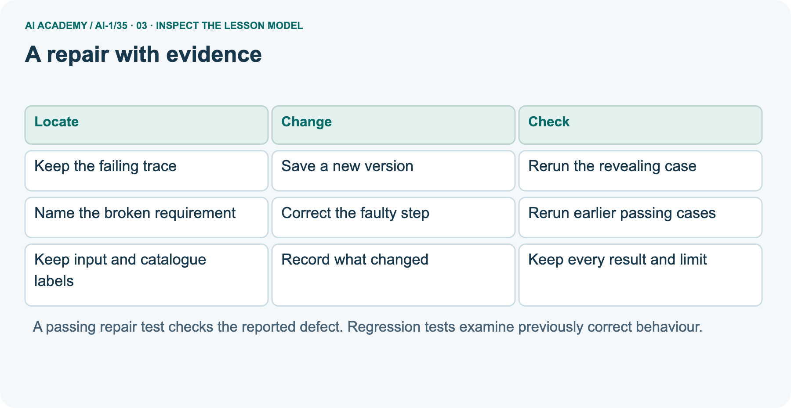
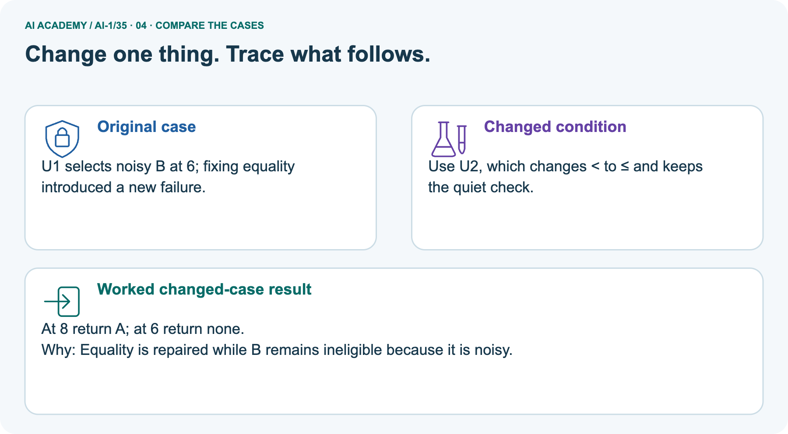
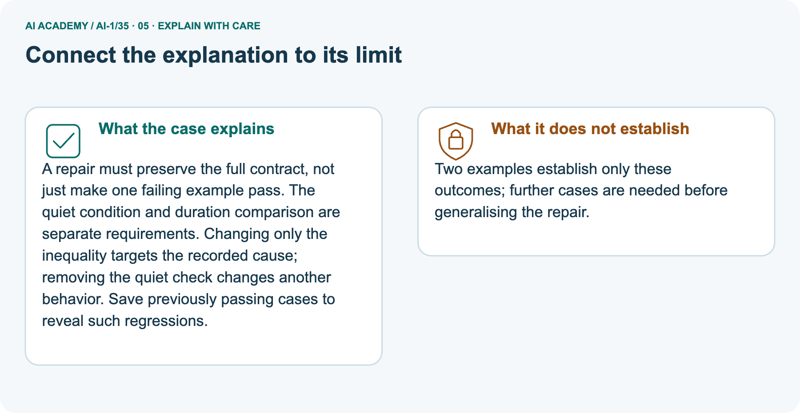
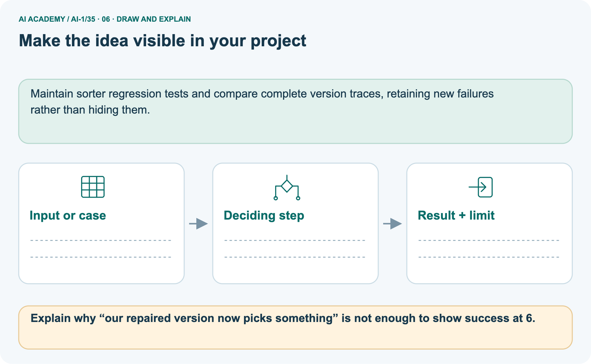

AI Academy · Level 1 · Grade 6 · Week 35 · Workbook
Improve One Cause
Learn to understand, design, build, test and explain AI systems responsibly.
Project: Helpful Classroom Sorter
THE CONNECTED WEEK
One connected repair, regression and candidate record.
Document the equality edit, operate the full set, diagnose a regression and audit the independent equipment revision.
Keep one habit: Keep defects, expected results, actual runs, version history and final-evaluation boundaries together.
Main lesson · Section 1
Recall: reconnect earlier ideas
Retrieve before opening notes.
Retrieve and explain
Try the recall before opening notes. Then use a different colour or a labelled second line to correct your explanation.
Without opening the old lesson, explain one key idea from Test Edge Cases and Fairness. Give an example and a mistake that the idea helps you avoid.
Without opening the old lesson, explain one key idea from Build a Paper Prototype. Give an example and a mistake that the idea helps you avoid.
Without opening the old lesson, explain one key idea from Find a Real Problem. Give an example and a mistake that the idea helps you avoid.
Earlier wording, alternatives and picture transcripts
Test Edge Cases and Fairness
Build a Paper Prototype
Find a Real Problem
Main lesson · Section 12
W1 · Record the exact equality repair
Preserve the old failed trace and name every unchanged condition.
Your evidence record
Standalone repair reference: catalogue B1=10 min quiet Yes, B2=8 No, B3=12 Yes, B4=15 No, in that order. Valid whole minutes 0–30, Quiet required Yes/No. Require duration≤minutes AND (quiet not required OR activity quiet), choose first fit, no match after all fail, clarify invalid input before search and reset each run. S0 uses < for time; S1 changes only that to ≤; T1 uses ≤ but omits quiet. R cases are (11,Yes),(9,No),(6,No),(9,Yes). Add equality (10,Yes),(8,No) and validation/endpoints (0,Yes),(30,Yes),(31,Yes),(blank,Yes),(10.5,Yes),(10,Maybe). B version 2 changes only B1 duration to 20; test (12,Yes). B version 3 uses durations 20,18,17,15 with original quiet labels/order; test (15,No) and (15,Yes). Label actual catalogue and prototype versions on every trace.
Use S0’s failure on 10 Yes with catalogue B version 1. Record the expected and incorrect outputs, the faulty time comparison, the exact S1 correction and the other conditions that must remain.
Explain what old evidence to preserve.
Main lesson · Section 13
W2 · Operate repair and regression cases
Use the supplied complete test reference and record actual runs separately from predictions.
Your evidence record
Use the complete activity repair/test reference in W1 for every required request and catalogue variation. Keep the old S0 record, new S1 instructions, actual baseline/prototype runs and unrun cases separately labelled.
Plan and operate the S1 repair and regression set described in the lesson, using the appropriate catalogue version for each case. Record expected and observed results separately with reasons and traces.
Summarise full passes over all attempted cases, list unrun cases separately and identify any remaining failures. Do not replace observed mistakes with worked answers.
Main lesson · Section 14
W3 · Diagnose the introduced quiet failure
Use the earlier passing case to establish regression.
Your evidence record
T1 accepts equal times but omits the quiet check. Explain why it passes 10 Yes yet fails 9 Yes. Use S0’s earlier correct result for 9 Yes to justify the word regression.
What should change in T1, and which two cases should be rerun first?
Main lesson · Section 16
W5 · Protect the meaning of unseen evaluation
Retain old evaluation results and distinguish development after a revision.
Your evidence record
After seeing a reserved final case fail, a team edits its candidate, reruns that same case and calls the result “a successful unseen test of the new version”. Explain what is wrong and what should be recorded instead.
State what must be saved before an evaluation begins.
Main lesson · Section 4
W4 · Audit a different proposed repair
Keep one first attempt before hints or feedback.
Read and explain independently
Equipment catalogue E lists E1 first with capacity 4 and E2 second with capacity 8. Valid whole group sizes are 1 to 10. Choose the first capacity at least the group size, or no match; invalid input needs clarification.
Old U0 uses strictly greater capacity and stops at the first fit. Proposed U1 includes equality but keeps searching and returns the last fit. Independently compare U0, U1 and the requirement for groups 8 and 3.
Identify the repair and regression, propose U2 and give one validation check. No booking occurs.
Keep a fair record
Attempt this case before feedback. Record any help. Earlier examples below are further practice; a case already practised with feedback cannot establish fresh transfer.
Earlier wording, alternatives and picture transcripts
Independent case: Audit a different proposed repair
Main lesson · Section 9
Project · Keep the decision and its evidence
Add this week’s change to your existing project record.
Your evidence record
If the sorter has an evidenced defect, save a new version with one evidence-linked change and a before/after test table; otherwise retain the current tested version and state that no repair was needed.
The project change and evidence I will keep
Main lesson · Section 17
Feedback · Repair and return
Keep the first attempt, the repair and a changed-case return.
Your evidence record
| Evidence | My record |
|---|---|
| Worked alone / hint / model | |
| First step I repaired and why | |
| New case checked later; date and result | |
| What I can now explain without notes | |
| One remaining question |
Revisit this idea with your teacher after a delay. Familiarity is different from explaining and using it on a changed case.
Main lesson · Section 10
Finish · Judge the evidence in your work
Point to work that supports your confidence level.
Your evidence record
- I can explain the mechanism.
- I can show evidence.
- I can handle a changed case.
- I can name a limit.
Mark each as not yet, with help or independently, and attach supporting work.
Teacher review ____________________ Next step ____________________
Reference bank and extra practice
Choose the reference that helps your next step.
Reference · Supported W2 record
Reference · Section 2
Reference · Supported W2 record
This is the same W2 attempt. Keep one response record.
Use this when helpful
Use W2: Check the repair and earlier behaviour for Improving and checking regressions. Record the answer once; the lesson and workbook refer to the same attempt.
| Given inputs | Procedure I chose | Middle steps | Result and check |
|---|---|---|---|
Extra practice · Repair the explanation
Reference · Section 3
Extra practice · Repair the explanation
Explain the deciding fact before discussing the answer.
Use this when helpful
Use the worked case for Improving and checking regressions. Proposed explanation: “One repaired example proves improvement everywhere”. Decide whether this explanation is supported.
Point to the step or supplied fact that decides; explain your repair if needed.
Reference · Original learning target
Reference · Section 5
Reference · Original learning target
Use this target to inspect an explanation.
Use this when helpful
Version A makes four errors. Version B makes one after lighting, labels and rules all change. What can you conclude, and how would you isolate the effect of lighting?
Extra practice · A complete case
Reference · Section 6
Extra practice · A complete case
Try the question before checking the worked explanation.
Use this when helpful
The team changes lighting, labels and rules together; errors fall from four to one.
Can it identify the cause of improvement?
Show your trace, calculation or evidence
Extra practice · A changed case
Reference · Section 7
Extra practice · A changed case
Keep this practice separate from the reserved independent attempt.
Use this when helpful
Dim photos fail. You change the lighting and all decision rules together; performance improves. Can you tell which change helped? Design a clearer comparison.
My practice answer and reason
Week 35 Test and reflect
Extra practice · Design a revealing test
Reference · Section 8
Extra practice · Design a revealing test
Predict before tracing or testing.
Use this when helpful
Create a changed input, boundary case or missing-information case. Write the expected answer or safe response before testing.
| Test record | My evidence |
|---|---|
| Changed input or condition | |
| Expected answer or fallback | |
| Observed result | |
| Why the result occurred |
Reference · Original target response space
Reference · Section 11
Reference · Original target response space
This teaching case is practice rather than a fresh assessment.
Use this when helpful
Version A makes four errors. Version B makes one after lighting, labels and rules all change. What can you conclude, and how would you isolate the effect of lighting?
Record support used: none, hint or teacher explanation.
Reference · Independent-case response copy
Reference · Section 15
Reference · Independent-case response copy
This duplicates W4. Reuse the same first-attempt record.
Use this when helpful
Equipment catalogue E lists E1 first with capacity 4 and E2 second with capacity 8. Valid whole group sizes are 1 to 10. Choose the first capacity at least the group size, or no match; invalid input needs clarification.
Old U0 uses strictly greater capacity and stops at the first fit. Proposed U1 includes equality but keeps searching and returns the last fit. Independently compare U0, U1 and the requirement for groups 8 and 3.
Identify the repair and regression, propose U2 and give one validation check. No booking occurs.
Extra practice · Use the worked picture
Reference · Section 18
Extra practice · Use the worked picture
Keep the explanation and the support you used.
Use this when helpful
A fictional quiet-activity chooser has a boundary bug and a proposed repair.
A: quiet Yes, 8 minutes; B: quiet No, 5 minutes. Request quiet required Yes.
U0 accepts only duration<available time. U1 fixes ≤ but accidentally removes the quiet requirement.



Explain why “our repaired version now picks something” is not enough to show success at 6.
Support used: alone / hint / worked example. This record is practice evidence.
Project connection: Maintain sorter regression tests and compare complete version traces, retaining new failures rather than hiding them.
Reference · Project portfolio record
Reference · Section 19
Reference · Project portfolio record
Extend your main project response when helpful.
Use this when helpful
Project: Helpful Classroom Sorter
Current milestone: Present and defend. Demonstrate the system, explain one failure and justify the next improvement with evidence.
Maintain sorter regression tests and compare complete version traces, retaining new failures rather than hiding them.
| Evidence to keep | My record |
|---|---|
| This week’s input and deciding step | |
| Prediction and actual result (or labelled paper trace) | |
| One change since the previous checkpoint and why | |
| One error or limit and the next test |
Extra practice: pictures, repair and feedback
Reference · Section 20
Extra practice: pictures, repair and feedback
Attempt each question before opening its explanation. Use one browser or paper copy.
First supported question
A fictional quiet-activity chooser has a boundary bug and a proposed repair.
Which labelled step matches this detail? U1 selects noisy B at 6; fixing equality introduced a new failure.
1. Bad revision
2. Regression case
3. Expected repair
4. Boundary failure
Hint if needed: Read the steps in the pictorial case. Match the supplied detail to the stage that performs or records it.
Practice 1: explain the deciding evidence
Check the first explanation
After your attempt, compare with the supported explanation: Bad revision U1 selects noisy B at 6; fixing equality introduced a new failure. A repair must preserve the full contract, not just make one failing example pass.
The quiet condition and duration comparison are separate requirements. Changing only the inequality targets the recorded cause; removing the quiet check changes another behavior.
Save previously passing cases to reveal such regressions.
Changed-case question
Changed-case practice: Use U2, which changes < to ≤ and keeps the quiet check. Which conclusion is supported by the supplied facts?
1. At 8 return A; at 6 return none.
2. This one example guarantees correct results for every future input.
3. We can decide the result without examining the changed input or the procedure.
Hint if needed: Use the changed condition and the deciding step in the pictorial trace. The answer must say what follows from those facts.
Practice 2: explain the deciding evidence
Check the changed case
After your attempt, compare with the supported explanation: At 8 return A; at 6 return none. Equality is repaired while B remains ineligible because it is noisy.
Repair and save your work
Review Test Edge Cases and Fairness (ai-1/34). Goal: Choose tests just below, at and above a decision boundary. Short practice: Which single boundary run most directly detects the strict-comparison bug, and why?.
Return to this week and explain what you changed.
Review Build a Paper Prototype (ai-1/32). Goal: Build a runnable paper prototype with explicit instructions and visible state. Short practice: What should appear in the test log before and after the repair?.
Return to this week and explain what you changed.
Review Find a Real Problem (ai-1/29). Goal: Describe a specific user difficulty using supplied evidence without inventing its cause.
Short practice: Write a one-sentence project goal and say what evidence would count as a failure.. Return to this week and explain what you changed.
Use Download completed work in the hosted lesson to export your answers, reflections, practice feedback and code-run evidence. Open the HTML copy to read or print it.
Drafts stay in this browser when storage is available; clear drafts on a shared device.
Earlier wording, alternatives and picture transcripts
Use this supported practice once, in the browser or on paper. Keep the reserved independent assessment for a separate first attempt before teacher feedback.
Repair a missing building block
Keep your completed work
Reference · Six-picture response sheets
Reference · Section 21
Reference · Six-picture response sheets
Choose the image that helps rather than repeating all six.
01. Improve One Cause: the case



A fictional quiet-activity chooser has a boundary bug and a proposed repair. Supplied facts: A: quiet Yes, 8 minutes; B: quiet No, 5 minutes. Request quiet required Yes. U0 accepts only duration<available time.
U1 fixes ≤ but accidentally removes the quiet requirement.
Point to the given fact that matters most. Explain why it matters.
02. Follow the deciding steps



Boundary failure: At 8 minutes, U0 rejects A and rejects noisy B: none. → Expected repair: Correct logic must allow A when time equals 8. → Regression case: At 6 quiet-required minutes, correct output is none. → Bad revision: U1 selects noisy B at 6; fixing equality introduced a new failure.
Point to each numbered stage and explain which recorded input it uses.
03. A repair with evidence



A repair with evidence. Keep the failing trace | Save a new version | Rerun the revealing case. Name the broken requirement | Correct the faulty step | Rerun earlier passing cases.
Keep input and catalogue labels | Record what changed | Keep every result and limit
Read the labels and values. Explain the relationship the model shows.
04. Change one thing. Trace what follows.



Original case: U1 selects noisy B at 6; fixing equality introduced a new failure. Changed condition: Use U2, which changes < to ≤ and keeps the quiet check. Expected result: At 8 return A; at 6 return none.
Reason: Equality is repaired while B remains ineligible because it is noisy.
Predict before checking the worked changed-case result. Name what changed and what the supplied facts allow you to conclude.
05. Connect the explanation to its limit



A repair must preserve the full contract, not just make one failing example pass. The quiet condition and duration comparison are separate requirements.
Changing only the inequality targets the recorded cause; removing the quiet check changes another behavior. Save previously passing cases to reveal such regressions.
Limit: Two examples establish only these outcomes; further cases are needed before generalising the repair.
Explain the case, then point to a limit on the claim.
06. Make the idea visible in your project



Maintain sorter regression tests and compare complete version traces, retaining new failures rather than hiding them. Draw your input, deciding step, result and limit.
Supported question: Explain why “our repaired version now picks something” is not enough to show success at 6.
Draw your project trace and justify the deciding step using evidence.